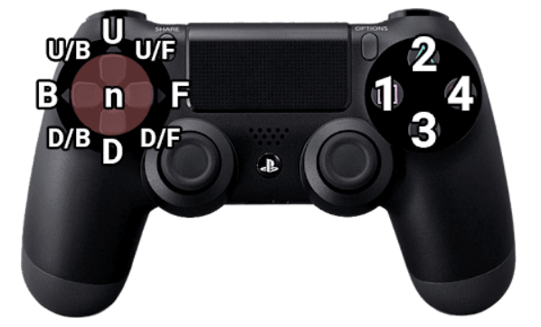

Tekken is one of the most difficult fighting games to learn. Each of the 30+ characters have more than 100 different moves, some even having 200. For a new player this amount of moves can be incredibly overwelming.
This is where Iron Fist Data comes in. On here you can select a character to see what their best moves are and how to beat them. Additionally you can add counter play that you have found with your own character to deal with a certain move.
Tekken Notation

Additional Notation
| Notation | Meaning |
|---|---|
| T! | Tornado |
| WS | While Standing |
| WR | While Running |
| SSR | Side Step Right |
| SSL | Side Step Left |
| CH | Counter Hit |
| FC | Fully Crouched |
| + | Press Together (1+2) |
| QCF | Quarter Circle Forward (d,df,f) |
| QCB | Quarter Circle Back (d,db,b) |